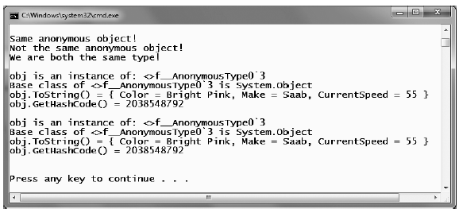

As an OO programmer, you know the benefits of defining classes to represent the state and functionality of a given programming entity. To be sure, whenever you need to define a class that is intended to be reused across projects and provides numerous bits of functionality through a set of methods, events, properties, and custom constructors, creating a new C# class is common practice and often mandatory.
However, there are other times when you would like to define a class simply to model a set of encapsulated (and somehow related) data points without any associated methods, events, or other custom functionality. Furthermore, what if this type is only to be used internally to your current application and it’s not intended to be reused? If you need such a “temporary” type, earlier versions of C# would require you to nevertheless build a new class definition by hand:
internal class SomeClass { // Define a set of private member variables... // Make a property for each member variable... // Override ToString() to account for each member variable... // Override GetHashCode() and Equals() to work with value based equality... }
While building such a class is not rocket science, it can be rather labor-intensive if you are attempting to encapsulate more than a handful of members (although automatic properties do help in this regard). These days, we are provided with a massive shortcut for this very situation (termed anonymous types) that in many ways is a natural extension of C#’s anonymous methods syntax (examined in Chapter 11).
When you define an anonymous type, you do so by making use of the var keyword (see Chapter 3) in conjunction with object initialization syntax (see Chapter 5). To illustrate, create a new Console Application named AnonymousTypes. Now, update Main() with the following anonymous class, which models a simple car type:
static void Main(string[] args) { Console.WriteLine("***** Fun with Anonymous Types *****\n"); // Make an anonymous type representing a car. var myCar = new { Color = "Bright Pink", Make = "Saab", CurrentSpeed = 55 }; // Now show the color and make. Console.WriteLine("My car is a {0} {1}.", myCar.Color, myCar.Make); Console.ReadLine(); }
Again note that the myCar variable must be implicitly typed, which makes good sense as we are not modeling the concept of an automobile using a strongly typed class definition. At compile time, the C# compiler will autogenerate a uniquely named class on our behalf. Given the fact that this class name is not visible from C#, the use of implicit typing using the var keyword is mandatory.
Also notice that we have to specify (using object initialization syntax) the set of properties that model the data we are attempting to encapsulate. Once defined, these values can then be obtained using standard C# property invocation syntax.
All anonymous types are automatically derived from System.Object, and therefore support each of the members provided by this base class. Given this, we could invoke ToString(), GetHashCode(), Equals(), or GetType() on the implicitly typed myCar object. Assume our Program class defines the following static helper function:
static void ReflectOverAnonymousType(object obj) { Console.WriteLine("obj is an instance of: {0}", obj.GetType().Name); Console.WriteLine("Base class of {0} is {1}", obj.GetType().Name, obj.GetType().BaseType); Console.WriteLine("obj.ToString() = {0}", obj.ToString()); Console.WriteLine("obj.GetHashCode() = {0}", obj.GetHashCode()); Console.WriteLine(); }
Now assume we invoke this method from Main(), passing in the myCar object as the parameter:
static void Main(string[] args) { Console.WriteLine("***** Fun with Anonymous types *****\n"); // Make an anonymous type representing a car. var myCar = new {Color = "Bright Pink", Make = "Saab", CurrentSpeed = 55}; // Reflect over what the compiler generated. ReflectOverAnonymousType(myCar); Console.ReadLine(); }
The output will look similar to the following:
***** Fun with Anonymous types *****
obj is an instance of: <>f__AnonymousType0`3
Base class of <>f__AnonymousType0`3 is System.Object
obj.ToString() = { Color = Bright Pink, Make = Saab, CurrentSpeed = 55 }
obj.GetHashCode() = 2038548792
First of all, notice that in this example, the myCar object is of type <>f__AnonymousType0`3 (your name may differ). Remember that the assigned type name is completely determined by the compiler and is not directly accessible in your C# code base.
Perhaps most important, notice that each name/value pair defined using the object initialization syntax is mapped to an identically named read-only property and a corresponding private read-only backing field. The following C# code approximates the compiler-generated class used to represent the myCar object (which again can be verified using tools such as reflector.exe or ildasm.exe):
internal sealed class <>f__AnonymousType0<<Color>j__TPar, <Make>j__TPar, <CurrentSpeed>j__TPar> { // Read-only fields private readonly <Color>j__TPar <Color>i__Field; private readonly <CurrentSpeed>j__TPar <CurrentSpeed>i__Field; private readonly <Make>j__TPar <Make>i__Field; // Default constructor public <>f__AnonymousType0(<Color>j__TPar Color, <Make>j__TPar Make, <CurrentSpeed>j__TPar CurrentSpeed); // Overridden methods public override bool Equals(object value); public override int GetHashCode(); public override string ToString(); // Read-only properties public <Color>j__TPar Color { get; } public <CurrentSpeed>j__TPar CurrentSpeed { get; } public <Make>j__TPar Make { get; } }
All anonymous types automatically derive from System.Object and are provided with an overridden version of Equals(), GetHashCode(), and ToString(). The ToString() implementation simply builds a string from each name/value pair, for example:
public override string ToString() { StringBuilder builder = new StringBuilder(); builder.Append("{ Color = "); builder.Append(this.<Color>i__Field); builder.Append(", Make = "); builder.Append(this.<Make>i__Field); builder.Append(", CurrentSpeed = "); builder.Append(this.<CurrentSpeed>i__Field); builder.Append(" }"); return builder.ToString(); }
The GetHashCode() implementation computes a hash value using each anonymous type’s member variables as input to the System.Collections.Generic.EqualityComparer<T> type. Using this implementation of GetHashCode(), two anonymous types will yield the same hash value if (and only if) they have the same set of properties that have been assigned the same values. Given this implementation, anonymous types are well-suited to be contained within a Hashtable container.
While the implementation of the overridden ToString() and GetHashCode() methods is fairly straightforward, you may be wondering how the Equals() method has been implemented. For example, if we were to define two "anonymous cars" variables that specify the same name/value pairs, would these two variables be considered equal or not? To see the results firsthand, update your Program type with the following new method:
static void EqualityTest() { // Make 2 anonymous classes with identical name/value pairs. var firstCar = new { Color = "Bright Pink", Make = "Saab", CurrentSpeed = 55 }; var secondCar = new { Color = "Bright Pink", Make = "Saab", CurrentSpeed = 55 }; // Are they considered equal when using Equals()? if (firstCar.Equals(secondCar)) Console.WriteLine("Same anonymous object!"); else Console.WriteLine("Not the same anonymous object!"); // Are they considered equal when using ==? if (firstCar == secondCar) Console.WriteLine("Same anonymous object!"); else Console.WriteLine("Not the same anonymous object!"); // Are these objects the same underlying type? if (firstCar.GetType().Name == secondCar.GetType().Name) Console.WriteLine("We are both the same type!"); else Console.WriteLine("We are different types!"); // Show all the details. Console.WriteLine(); ReflectOverAnonymousType(firstCar); ReflectOverAnonymousType(secondCar); }
Assuming you have called this method from within Main(), Figure 12-6 shows the (somewhat surprising) output.
Figure 12-6. The equality of anonymous types
When you run this test code, you will see that the first conditional test where you call Equals() returns true, and therefore the message “Same anonymous object!” prints out to the screen. This is because the compiler-generated Equals() method makes use of value-based semantics when testing for equality (e.g., checking the value of each field of the objects being compared).
However, the second conditional test (which makes use of the C# equality operator, ==) prints out "Not the same anonymous object!", which may seem at first glance to be a bit counterintuitive. This result is due to the fact that anonymous types do not receive overloaded versions of the C# equality operators (== and !=). Given this, when you test for equality of anonymous types using the C# equality operators (rather than the Equals() method), the references, not the values maintained by the objects, are being tested for equality.
Last but not least, in our final conditional test (where we examine the underlying type name), we find that the anonymous types are instances of the same compiler-generated class type (in this example, <>f__AnonymousType0`3), due to the fact that firstCar and secondCar have the same properties (Color, Make, and CurrentSpeed).
This illustrates an important but subtle point: the compiler will only generate a new class definition when an anonymous type contains unique names of the anonymous type. Thus, if you declare identical anonymous types (again, meaning the same names) within the same assembly, the compiler generates only a single anonymous type definition.
It is possible to create an anonymous type that is composed of other anonymous types. For example, assume you wish to model a purchase order that consists of a timestamp, a price point, and the automobile purchased. Here is a new (slightly more sophisticated) anonymous type representing such an entity:
// Make an anonymous type that is composed of another. var purchaseItem = new { TimeBought = DateTime.Now, ItemBought = new {Color = "Red", Make = "Saab", CurrentSpeed = 55}, Price = 34.000}; ReflectOverAnonymousType(purchaseItem);
At this point, you should understand the syntax used to define anonymous types, but you may still be wondering exactly where (and when) to use this new language feature. To be blunt, anonymous type declarations should be used sparingly, typically only when making use of the LINQ technology set (see Chapter 14). You would never want to abandon the use of strongly typed classes/structures simply for the sake of doing so, given anonymous types’ numerous limitations, which include the following:
However, when programming with the LINQ technology set, you will find that in many cases this syntax can be very helpful when you want to quickly model the overall shape of an entity rather than its functionality.
Source Code The AnonymousTypes project can be found under the Chapter 12 subdirectory.